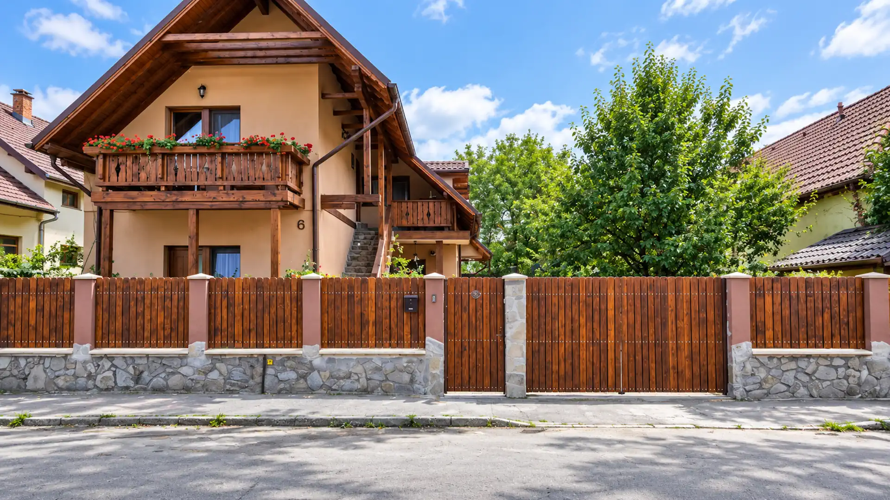
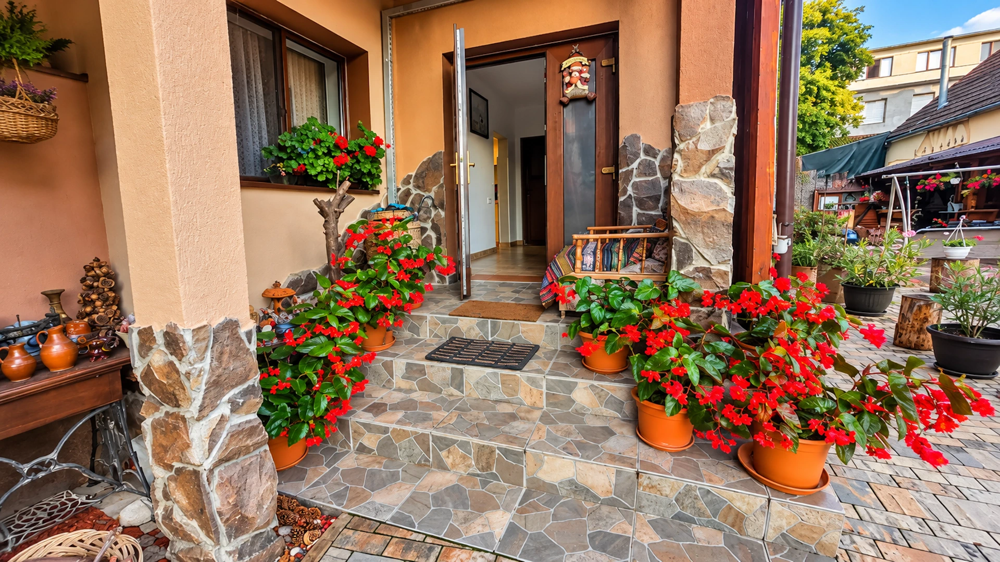
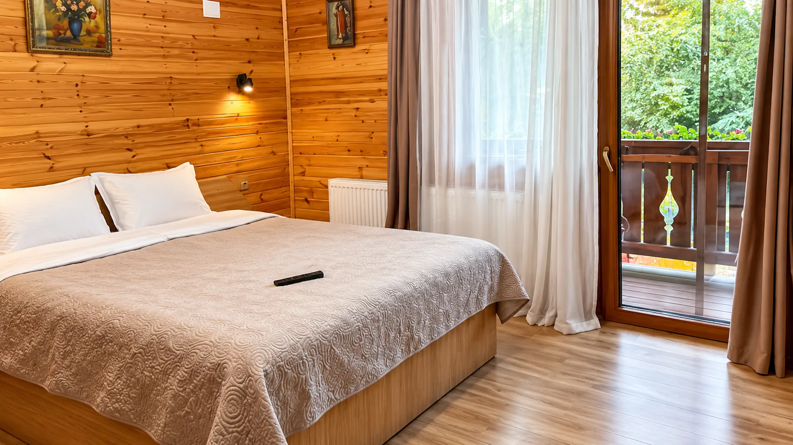
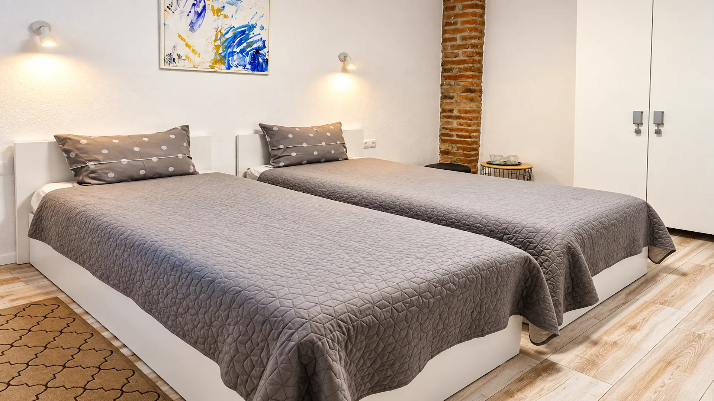
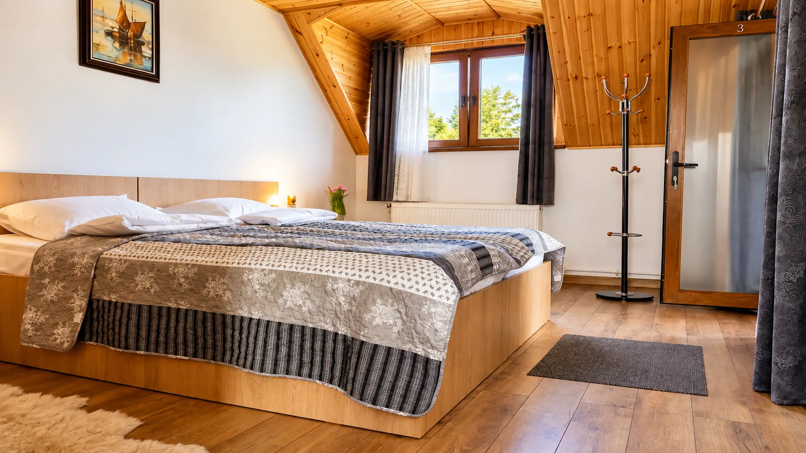
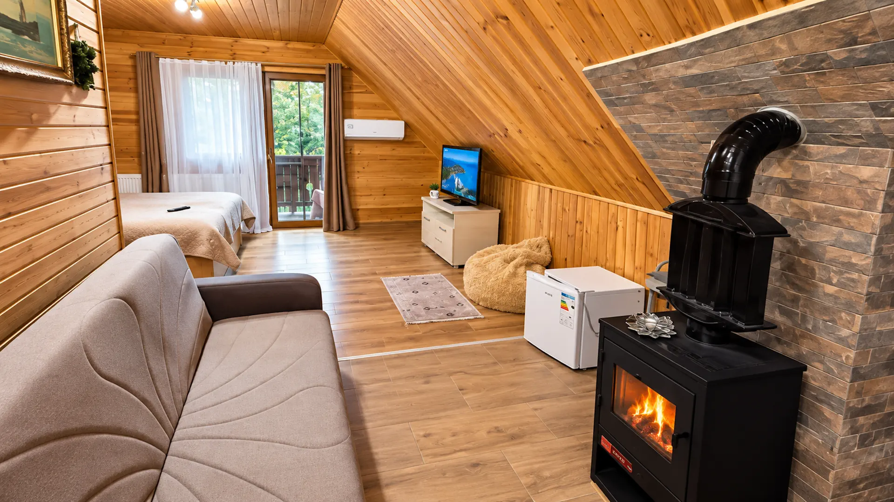
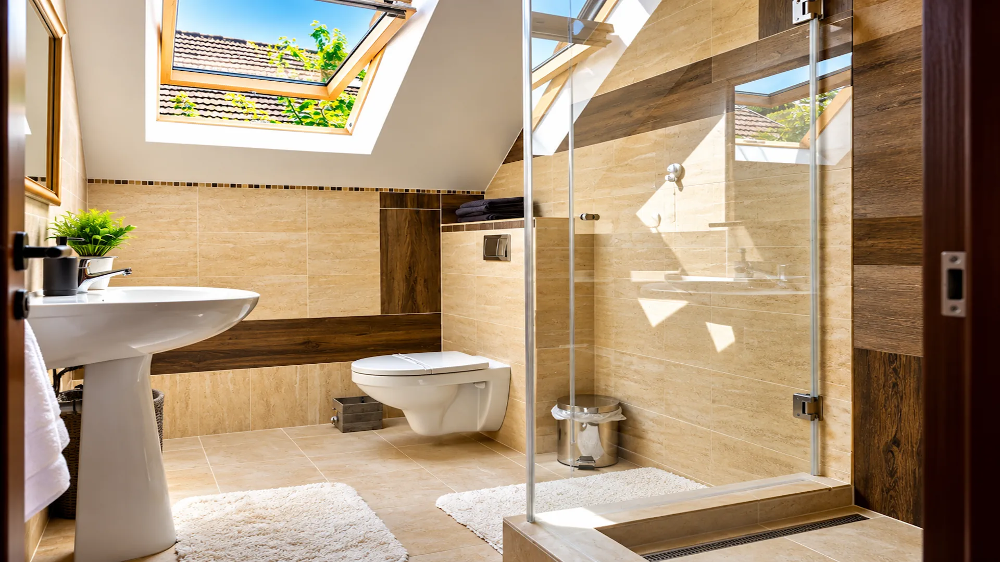
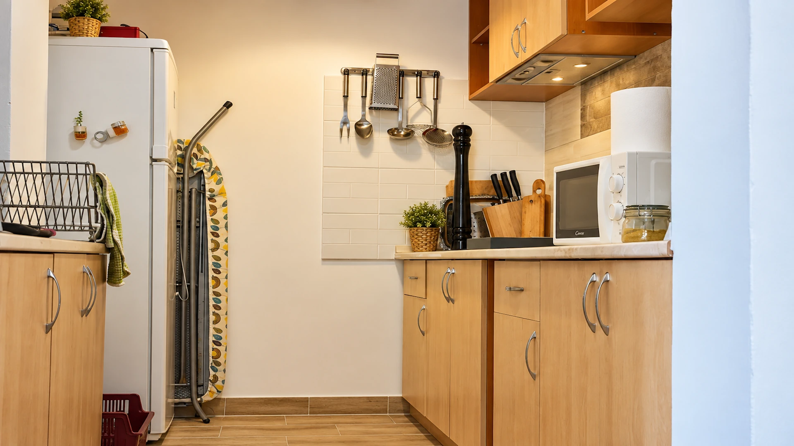
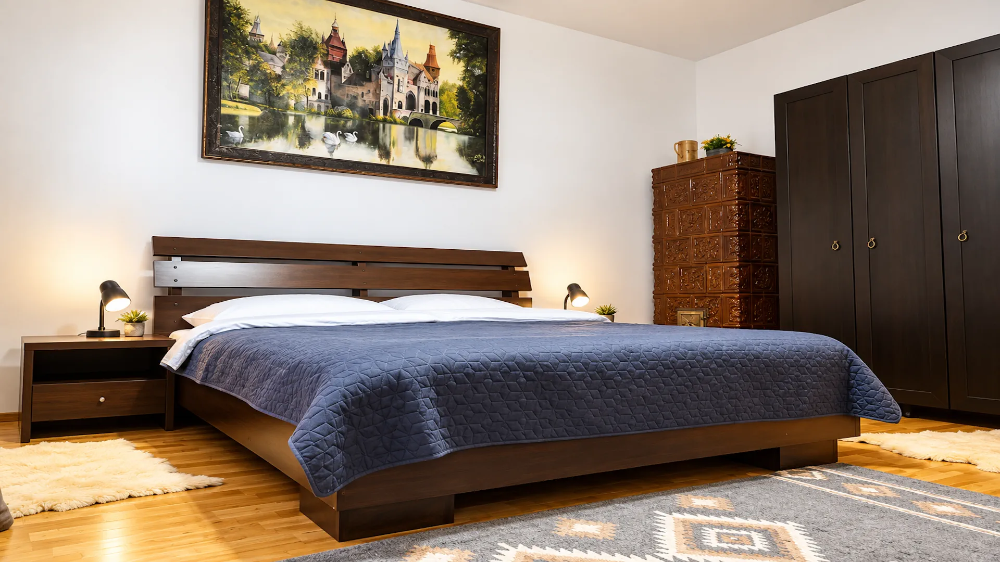
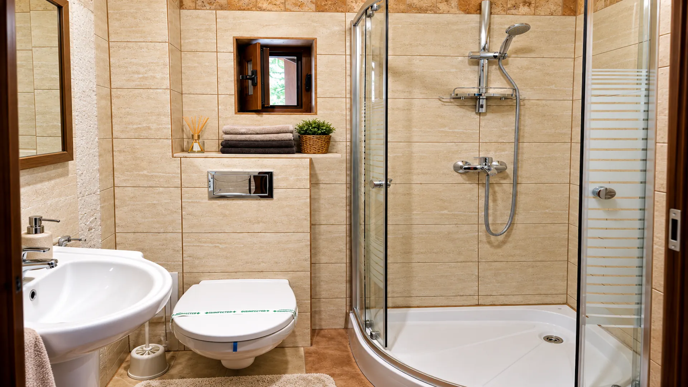

🌿
Grădină & terasă
Spații exterioare plăcute pentru cafea, relaxare și seri liniștite.
Un loc primitor în Brașov, unde confortul, liniștea și atmosfera caldă de acasă se întâlnesc.
Casa Felice oferă camere pentru familii, băi private, chicinete și vedere spre grădină. Lemnul, piatra și atmosfera relaxată dau proprietății un caracter autentic, potrivit atât pentru un city break, cât și pentru un sejur mai lung.


Spații exterioare plăcute pentru cafea, relaxare și seri liniștite.
Parcare gratuită la proprietate pentru o sosire fără griji.
Camere confortabile și zonă de joacă în aer liber pentru copii.
Dotări practice pentru un sejur independent și confortabil.
Aceasta este structura vizuală pentru camere. Denumirile, capacitatea și prețurile vor fi completate după confirmarea informațiilor de la proprietar.

PREVIEW CAMERĂUn exemplu de prezentare pentru una dintre camerele Casei Felice.

PREVIEW CAMERĂUn exemplu de prezentare pentru una dintre camerele Casei Felice.

PREVIEW CAMERĂUn exemplu de prezentare pentru una dintre camerele Casei Felice.





Strada Sfinții Arhangheli 6
Brașov, România
Casa Felice devine punctul de plecare pentru experiențe, gastronomie, locuri de vizitat, excursii și servicii utile — toate integrate într-un mini-concierge digital.
Planifică o plimbare fără grabă prin centrul istoric și străduțele sale.
Chiar și vara, o jachetă ușoară poate fi utilă dimineața sau seara.
Bran, Râșnov și Valea Prahovei sunt ușor de combinat cu un sejur în Brașov.
Poți solicita transfer direct din site pentru destinațiile importante.
Drumeții, natură și experiențe active în jurul Brașovului.
Explore Brașov Data · ready to connectExperiențe urbane, patrimoniu și descoperiri locale.
Explore Brașov Data · ready to connectIdei potrivite pentru familii și copii.
Explore Brașov Data · ready to connectAici vom încărca restaurantele din baza centrală Explore Brașov și le vom sorta automat după distanța față de Casa Felice.
Sortare după distanță față de proprietate.
Selecții curate din baza Explore Brașov.
Mic dejun, prânz, cină sau o seară specială.
Secțiunea este pregătită pentru conținutul din categoria places/ a bazei Explore Brașov.
Solicită transport direct din Casa Felice.
Solicită transport direct din Casa Felice.
Solicită transport direct din Casa Felice.
Solicită transport direct din Casa Felice.
Trimite o cerere rapidă pentru disponibilitate și continuă apoi cu propriul tău ghid Explore Brașov.
Rezervă sejurul →